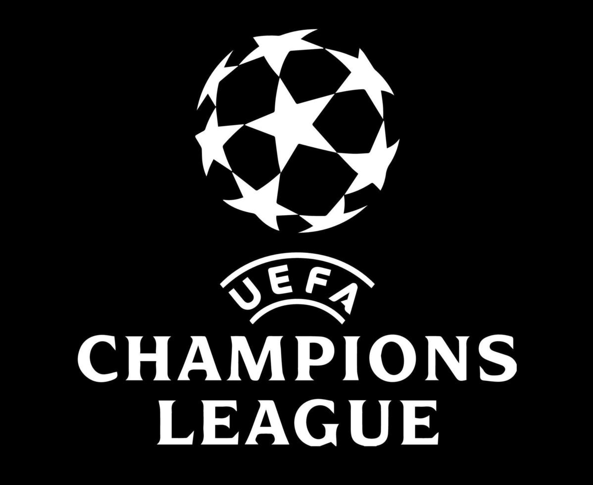
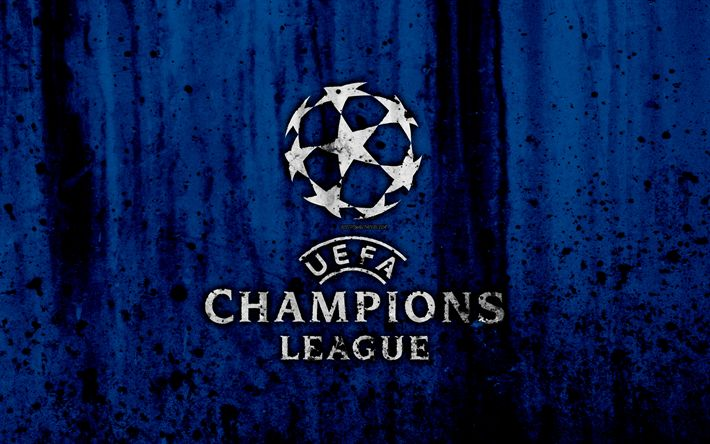
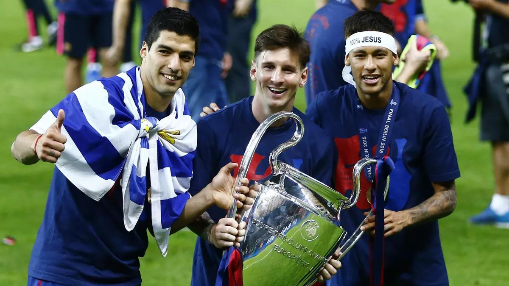
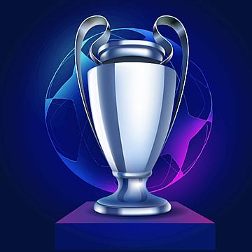

The UEFA Champions League is Europe's premier club football tournament, organized by the Union of European Football Associations (UEFA). It brings together the top clubs from various European leagues to compete for the most prestigious title in club football. Founded in 1955 as the European Champion Clubs' Cup, it was rebranded as the UEFA Champions League in 1992. The tournament features a group stage followed by knockout rounds, including the round of 16, quarterfinals, semifinals, and the final. Clubs qualify for the tournament based on their performance in their domestic leagues and competitions. Some of the most iconic clubs in history, like Real Madrid, Barcelona, Bayern Munich, and Manchester United, have lifted the trophy. Real Madrid holds the record for the most Champions League titles, with 15 wins. The competition showcases the best football talents in the world, often featuring star players like Cristiano Ronaldo, Lionel Messi, and Kylian Mbappé. The tournament's anthem, composed by Tony Britten, is one of the most recognizable pieces of music in sports. Each season builds intense excitement and drama, captivating millions of fans globally. The final is a massive global event, broadcast in over 200 countries. The Champions League trophy, often referred to as "Big Ears," is one of the most iconic in sports. It represents excellence, teamwork, and the pinnacle of European club success. Winning the Champions League can define a club's legacy and boost its financial strength and global appeal. The tournament is not just about football—it's about history, passion, and unforgettable moments on the biggest stage.
 The UEFA Champions League trophy is one of the most iconic and recognizable trophies in world sports. Nicknamed “Big Ears” because of its large, curved handles, the trophy stands about 74 centimeters (29 inches) tall and weighs around 11 kilograms (24 pounds). Made of sterling silver, it has a sleek, elegant design that symbolizes prestige and excellence. The current version of the trophy was redesigned in 1967 by Jörg Stadelmann, a Swiss jeweler. Unlike trophies that are permanently given to winners, the Champions League trophy remains UEFA's property, though clubs receive a replica. Clubs that have won the competition five times or three times consecutively used to be allowed to keep the original, but that rule ended in 2009. The trophy features the UEFA logo and the phrase "Coupe des Clubs Champions Européens" engraved on the front. Each year, the names of the winning club and the year of victory are engraved on the back. Lifting the trophy is a moment of triumph and emotion, representing the peak of European club football. Players and managers dream of kissing or holding it high under the stadium lights. It's often the centerpiece of post-match celebrations, surrounded by confetti and roaring fans. The trophy also travels across Europe for promotional events and exhibitions. Its distinct look and deep history make it a symbol of greatness in the football world. To many, touching that silver cup is the ultimate validation of hard work, talent, and unity.
 The UEFA Champions League began as a response to the growing interest in international club competition in Europe during
the mid-20th century. Its origins trace back to 1955, when a French sports newspaper, L'Équipe, proposed the idea of a
pan-European tournament for the continent's top football clubs. Inspired by the success of international friendlies and
the popularity of clubs like Real Madrid and AC Milan, the concept quickly gained traction. UEFA, the governing body for
European football, officially launched the competition under the name “European Champion Clubs' Cup.”
The first edition of the tournament kicked off in the 1955-56 season, featuring 16 teams from across Europe. Real Madrid
dominated the early years, winning the first five titles in a row and setting the tone for the competition's legacy. At
the time, only the domestic league champions of each country and the reigning European champion were allowed to
participate.
In 1992, in response to the commercial growth of football and increasing demand from television broadcasters, the
tournament was rebranded as the UEFA Champions League. The format was changed to include a group stage, allowing more
teams from top leagues to enter and increasing global viewership. Since then, the competition has grown into the biggest
and most prestigious club tournament in the world.
From humble beginnings sparked by a newspaper's vision to a global spectacle watched by millions, the Champions League
has become a symbol of football excellence, passion, and drama. Its evolution reflects the broader rise of football as a
truly international sport.
This season we discovered a new phase Champions League. First of all, 36 teams played this season instead of 32. At first, there was a league phase among the teams. Every team 8 games in the league phase. The top 8 teams got onto the knockout stages straightly. The teams are ; Liverpool (1), Barcelona (2), Arsenal (3), Inter Milan (4), Atletico Madrid (5), Bayer Leverkusen (6), LOSC (7) and Aston Villa (8). Then 9th-24th positioned teams had a playoff round. From the playoff round, 8 more teams qualified for the knockout stages. The teams are ; Club Brugge, Real Madrid, PSV, Borussia Dortmund, Feyenoord, Bayern Munich, Benfica and PSG.
Here's the draw of the round of 16.
The quarter-finals are ;
Arsenal vs Real Madrid
Bayern Munich vs Inter Milan
Barcelona vs Borussia Dortmund
PSG vs Aston Villa.
Arsenal destroy Real Madrid 5-1 on aggregate, Inter Milan secured a close win against Bayern Munich, Barcelona gets a victory 5-3 on aggregate, then PSG almost bottled but still could secure the win against Villa, 5-4 on aggregate.